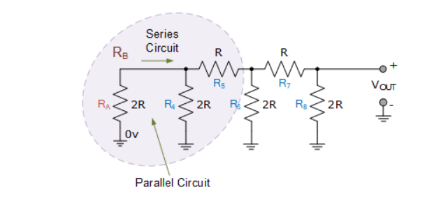

Differential Amplifier#
Author : Emad Etehadi
Differential Amplifier#
The differential amplifier is a voltage subtractor circuit which produces an output voltage proportional to the voltage difference of two input signals applied to the inputs of the inverting and non-inverting terminals of an operational amplifier. Differential amplifiers amplify the difference between two voltages making this type of operational amplifier circuit a Subtractor unlike a summing amplifier which adds or sums together the input voltages.
Differential Amplifier Analysis#
By connecting each input in turn to 0v ground we can use superposition to solve for the output voltage Vout. Then the transfer function for a Differential Amplifier circuit is given as:
Summing point \( V_a = V_b \) and \( V_b = V_2 \left( \frac{R_4}{R_2 + R_4} \right) \) If \( V_2 = 0 \), then : \( V_{\text{out}(a)} = -V_1 \left( \frac{R_3}{R_1} \right) \) If \( V_1 = 0 \), then : \( V_{\text{out}(b)} = V_2 \left( \frac{R_4}{R_2 + R_4} \right) \left( \frac{R_1 + R_3}{R_1} \right) \) $\( V_{\text{out}} = -V_{\text{out}(a)} + V_{\text{out}(b)} \)\( \)\( \therefore V_{\text{out}} = -V_1 \left( \frac{R_3}{R_1} \right) + V_2 \left( \frac{R_4}{R_2 + R_4} \right) \left( \frac{R_1 + R_3}{R_1} \right) \)\( When resistors, R1 = R2 and R3 = R4 the above transfer function for the differential amplifier can be simplified to the following expression: \)\( V_{\text{OUT}} = \frac{R_3}{R_1} (V_2 - V_1) \)$
Differential Amplifier Equation#
If all the resistors are all of the same ohmic value, that is: R1 = R2 = R3 = R4 then the circuit will become a Unity Gain Differential Amplifier and the voltage gain of the amplifier will be exactly one or unity. Then the output expression would simply be: $\( V_{\text{OUT}} = V_2 - V_1 \)$ Also note that if input V1 is higher than input V2 the output voltage sum will be negative, and if V2 is higher than V1, the output voltage sum will be positive.
The Differential Amplifier circuit is a very useful op-amp circuit and by adding more resistors in parallel with the input resistors R1 and R3, the resultant circuit can be made to either “Add” or “Subtract” the voltages applied to their respective inputs. One of the most common ways of doing this is to connect a “Resistive Bridge” commonly called a Wheatstone Bridge to the input of the amplifier as shown below.
Aplication of Differential Amlifier#
Differential amplifiers are used mainly to suppress noise. Noise consists of typical noise (differential noise) and common-mode noise. Since the differential amplifier amplifies the difference between the two inputs (Non-inverting input VIN(+) and inverting input VIN(-)) , it can easily attenuate common-mode noise in which the same noise is applied to the differential input terminals.
There are two main causes of common-mode noise: 1.Noise is generated in the wires and cables, due to electromagnetic induction, etc., and it causes a difference in potential (i.e., noise) between the signal source ground and the circuit ground. 2.Current flowing into the ground of a circuit from another circuit causes a ground potential rise (noise). In both 1 and 2 above, the ground potential, a reference for a circuit, fluctuates because of noise. It is difficult to remove common-mode noise with typical filters. Differential amplifiers are used as a means of suppressing common-mode noise.

Wheatstone Bridge Differential Amplifier#
The standard Differential Amplifier circuit now becomes a differential voltage comparator by “Comparing” one input voltage to the other. For example, by connecting one input to a fixed voltage reference set up on one leg of the resistive bridge network and the other to either a “Thermistor” or a “Light Dependant Resistor” the amplifier circuit can be used to detect either low or high levels of temperature or light as the output voltage becomes a linear function of the changes in the active leg of the resistive bridge and this is demonstrated below.
Light Activated Differential Amplifier#

Here the circuit above acts as a light-activated switch which turns the output relay either “ON” or “OFF” as the light level detected by the LDR resistor exceeds or falls below some pre-set value. A fixed voltage reference is applied to the non-inverting input terminal of the op-amp via the R1 – R2 voltage divider network. The voltage value at V1 sets the op-amps trip point with a feed back potentiometer, VR2 used to set the switching hysteresis. That is the difference between the light level for “ON” and the light level for “OFF”.
The second leg of the differential amplifier consists of a standard light dependant resistor, also known as a LDR, photoresistive sensor that changes its resistive value (hence its name) with the amount of light on its cell as their resistive value is a function of illumination.
The LDR can be any standard type of cadmium-sulphide (cdS) photoconductive cell such as the common NORP12 that has a resistive range of between about 500Ω in sunlight to about 20kΩ or more in the dark.
The NORP12 photoconductive cell has a spectral response similar to that of the human eye making it ideal for use in lighting control type applications. The photocell resistance is proportional to the light level and falls with increasing light intensity so therefore the voltage level at V2 will also change above or below the switching point which can be determined by the position of VR1.
Then by adjusting the light level trip or set position using potentiometer VR1 and the switching hysteresis using potentiometer, VR2 an precision light-sensitive switch can be made. Depending upon the application, the output from the op-amp can switch the load directly, or use a transistor switch to control a relay or the lamps themselves.
It is also possible to detect temperature using this type of simple circuit configuration by replacing the light dependant resistor with a thermistor. By interchanging the positions of VR1 and the LDR, the circuit can be used to detect either light or dark, or heat or cold using a thermistor.
One major limitation of this type of amplifier design is that its input impedances are lower compared to that of other operational amplifier configurations, for example, a non-inverting (single-ended input) amplifier.
Each input voltage source has to drive current through an input resistance, which has less overall impedance than that of the op-amps input alone. This may be good for a low impedance source such as the bridge circuit above, but not so good for a high impedance source.
One way to overcome this problem is to add a Unity Gain Buffer Amplifier such as the voltage follower seen in the previous tutorial to each input resistor. This then gives us a differential amplifier circuit with very high input impedance and low output impedance as it consists of two non-inverting buffers and one differential amplifier. This then forms the basis for most “Instrumentation Amplifiers”.
Instrumentation Amplifier#
Instrumentation Amplifiers (in-amps) are very high gain differential amplifiers which have a high input impedance and a single ended output. Instrumentation amplifiers are mainly used to amplify very small differential signals from strain gauges, thermocouples or current sensing devices in motor control systems.
Unlike standard operational amplifiers in which their closed-loop gain is determined by an external resistive feedback connected between their output terminal and one input terminal, either positive or negative, “instrumentation amplifiers” have an internal feedback resistor that is effectively isolated from its input terminals as the input signal is applied across two differential inputs, V1 and V2.
The instrumentation amplifier also has a very good common mode rejection ratio, CMRR (zero output when V1 = V2) well in excess of 100dB at DC.
High Input Impedance Instrumentation Amplifier#
A typical example of a three op-amp instrumentation amplifier with a high input impedance ( Zin ) is given below:

The two non-inverting amplifiers form a differential input stage acting as buffer amplifiers with a gain of 1 + 2R2/R1 for differential input signals and unity gain for common mode input signals. Since amplifiers A1 and A2 are closed loop negative feedback amplifiers, we can expect the voltage at Va to be equal to the input voltage V1. Likewise, the voltage at Vb to be equal to the value at V2.
As the op-amps take no current at their input terminals (virtual earth), the same current must flow through the three resistor network of R2, R1 and R2 connected across the op-amp outputs. This means then that the voltage on the upper end of R1 will be equal to V1 and the voltage at the lower end of R1 to be equal to V2.
This produces a voltage drop across resistor R1 which is equal to the voltage difference between inputs V1 and V2, the differential input voltage, because the voltage at the summing junction of each amplifier, Va and Vb is equal to the voltage applied to its positive inputs.
However, if a common-mode voltage is applied to the amplifiers inputs, the voltages on each side of R1 will be equal, and no current will flow through this resistor. Since no current flows through R1 (nor, therefore, through both R2 resistors, amplifiers A1 and A2 will operate as unity-gain followers (buffers).
Since the input voltage at the outputs of amplifiers A1 and A2 appears differentially across the three resistor network, the differential gain of the circuit can be varied by just changing the value of R1.
The voltage output from the differential op-amp A3 acting as a subtractor, is simply the difference between its two inputs ( V2 – V1 ). This is amplified by the gain of A3 which can be one, or unity (assuming that R3 = R4). Then we have a general expression for overall voltage gain of the instrumentation amplifier circuit given as: $\( V_{\text{OUT}} = (V_2 - V_1) \left[ 1 + \frac{2R_2}{R_1} \right] \left[ \frac{R_4}{R_3} \right] \)$
Conclusion#
In conclusion, the differential amplifier project successfully demonstrates the fundamental principles of differential signal processing and its practical applications in electronics. Throughout the development and testing phases, we achieved a robust design capable of amplifying the difference between two input signals while effectively rejecting common-mode noise.